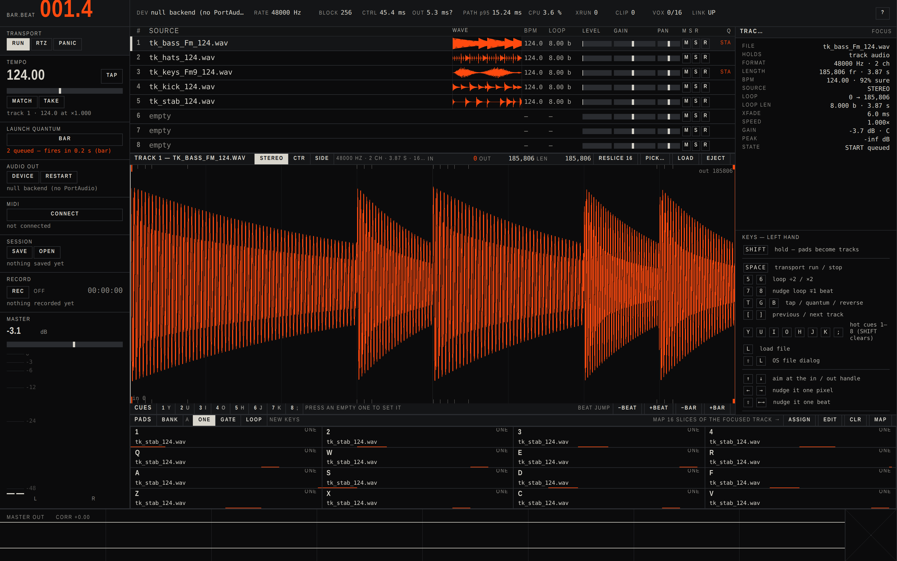

A multi-track loop mangler for one hand in the dark.
Load stems or whole tracks, sweep across a waveform to choose what loops,
launch them in time with each other, and hit the pieces back on sixteen
keys. Nothing is hidden behind a menu, nothing moves unless you move it.
Open the instrument— the whole thing, in this browser. Nothing to
install, and the audio never leaves your machine.
$./start
Or run it on your own machine, where the output goes straight to the sound
card instead of through a browser — a few milliseconds closer.
1
2
3
4
Q
W
E
R
A
S
D
F
Z
X
C
V
Sixteen keys under the left hand, four banks of them, and the same sixteen
pads on a MIDI controller if you have one. Hold SHIFT and the
grid becomes the eight tracks.

The panel, running. One accent, three jobs: where the clock is, what is queued, what is chosen.
Choosing
Sweep the waveform
Press, drag, release — those two samples are the loop. Backwards gives
the same region as forwards, and a press that does not travel changes
nothing, so a stray click cannot wipe a region you tuned by hand.
SHIFT-drag moves the view, the scroll wheel zooms around the
pointer, and the arrow keys nudge the aimed edge by one pixel of what
you are looking at — one sample, at full zoom.
Playing
Launches land on the bar
Starts, stops, reverses and pad hits wait for the quantum and land
sample-accurate: the audio block is split at the boundary rather than
rounded to it. The row tells you what it is waiting to do.
Eight hot cues a track on YUIOHJK;, beat
jump by a beat or a bar, and tempo match in both directions.
Keeping
A key holds its own sound
Assign a track's region to a key and the key takes a copy of the audio,
not a pointer to the track. Load something else on that track and the
key plays on, unchanged. Four banks, sixty-four slots.
Sessions write every track, key, region and zoom to a readable JSON
file, and takes of the master output are plain WAVs on your disk.
Not doing
Nothing leaves the machine
No account, no sign-up, no telemetry, no analytics, no crash reporting,
no update check. The panel talks to 127.0.0.1 and to
nothing else, and the type it draws with is served from its own folder
rather than a font CDN.
Your sets and takes are plain files under ~/.loopengine/.
Deleting that folder deletes all of it.
Measured, not claimed
The numbers
On a real device, 48 kHz, 256 frames
Figure
Press to speaker, at the mean queue wait
18.78 ms
Press to speaker, at the p95 queue wait
21.13 ms
Dropouts over 400 presses in 30 s
0
Callback CPU at that block size
15.4 %
Loop seam against the material's own steps
3.37×
The same seam with the crossfade off
15.83×
Taken from the signal the device actually consumed, teed to disk and
analysed — not from the backend's own arithmetic. The panel shows the
p95 figure and says p95 on the label.
Getting it
Three lines
Clone it from GitHub.
Run ./start — it fetches what it needs and opens the panel.
Press RUN. The demo kit is already loaded, and it was
generated by the code rather than sampled from anybody.
Linux or macOS, Python 3.9 or newer. PortAudio is the one thing it
cannot install for you — it is a system library, and
./start prints the line for your distribution.